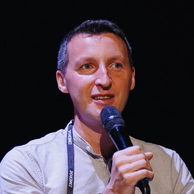

Researcher turned AI executive.

I'm Maxim, an AI and data science leader based in Barcelona. I build and scale data science and AI teams, lead product development of AI products, and ship AI-driven products that change how global operations run.
I started in research. My PhD at the Universitat Politècnica de Catalunya was on application of ML and linguistic models for machine translation, and I continued as a post-doctoral researcher at the University of Amsterdam.
From there I moved into industry and consulting: I was research lead at TAUS, led machine translation at Matrix Communications in Munich, then joined Booking.com in the Netherlands, where we took neural machine translation into production. I led applied AI at Unbabel in Lisbon, ran the ML Platform and then Data Science at Glovo, and spent four years as Director of Data Science at PepsiCo, leading demand forecasting, predictive analytics and supply chain optimization.
In December 2026 I'm joining NIQ as VP, AI Enablement.
Along the way I picked up an MBA from IE Business School, published 40+ papers, and co-founded NLPPeople.com.
What I work on
Let's talk
Forecasting, AI adoption, ML platforms, speaking or advising? The fastest way to reach me is LinkedIn.